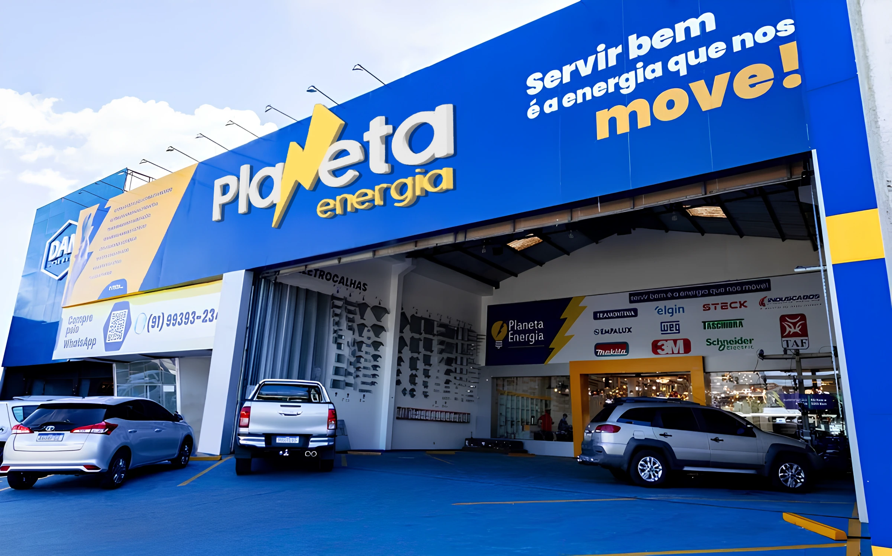
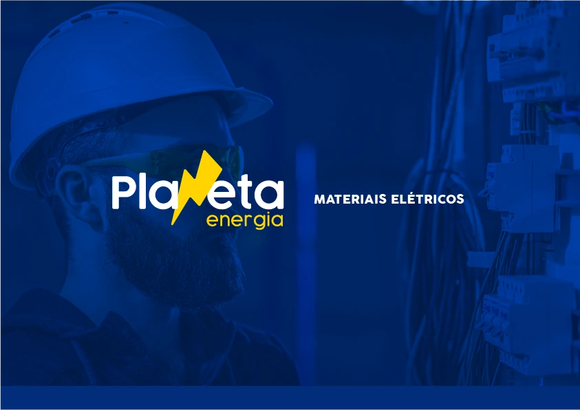
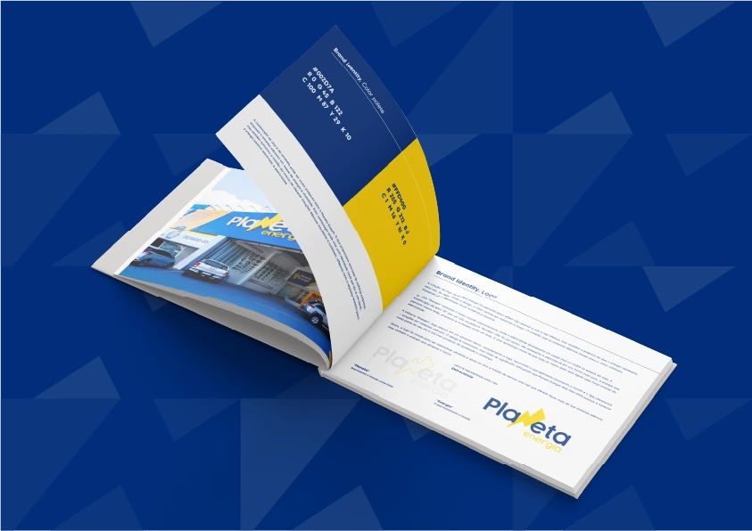
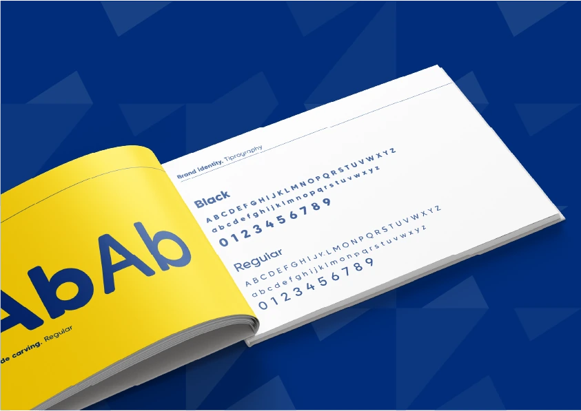
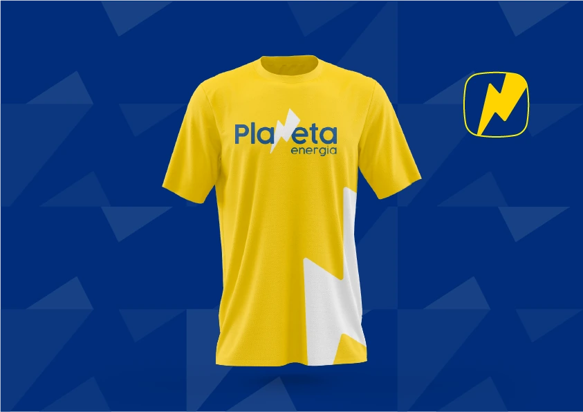
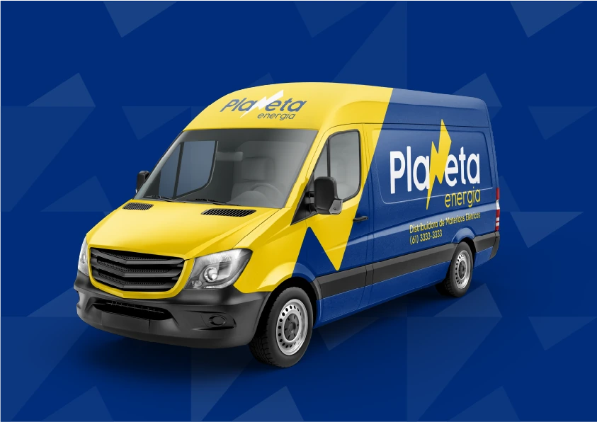

Presença que
transmite energia.
Uma identidade visual ligada ao universo de materiais elétricos. Um raio integrado à assinatura, azul e amarelo como elementos de reconhecimento e uma linguagem que conecta a marca ao espaço, às pessoas e ao movimento.

Um sinal de energia.
Uma assinatura própria.
O raio participa da construção do nome Planeta e aproxima o logotipo do setor de materiais elétricos. O símbolo também aparece de forma independente, acompanhando a assinatura em diferentes aplicações.
Essa mesma geometria se desdobra em um padrão gráfico de fundo. Nas pranchas, o recurso conecta a apresentação institucional às peças do manual e aos mockups.

Assinatura e imagem conectadas ao universo da marca.

Elementos e diretrizes reunidos em uma mesma linguagem.
Contraste para marcar.
Coerência para reconhecer.
Azul, amarelo e branco organizam a identidade. A combinação aparece no letreiro, nas páginas do manual e nas aplicações, alternando áreas de cor e versões da assinatura.
A prancha de tipografia apresenta pesos Black e Regular. Na composição das peças, diferenças de peso e tamanho estabelecem relações entre marca, títulos e informações de apoio.
O raio como
elemento de ligação.
Integrado à assinatura, isolado como símbolo ou ampliado nas aplicações, o raio conecta os materiais.
Uma combinação
de presença.
O azul estabelece a base visual. Amarelo e branco criam pontos de contraste nas diferentes composições.
Um padrão que
acompanha a marca.
Fragmentos geométricos do símbolo compõem os fundos das pranchas e dão continuidade à apresentação.

Pesos e escalas como recursos de hierarquia.

Assinatura e símbolo em uma aplicação no vestuário.
Da fachada
para outros caminhos.
A fachada apresenta a identidade em escala arquitetônica. No uniforme e no veículo, a mesma relação entre cores, assinatura e símbolo acompanha outros pontos de contato.
O mockup do veículo amplia o raio na lateral e distribui azul e amarelo pela carroceria. A aplicação permite observar como a linguagem visual se adapta a uma superfície com outra proporção.
